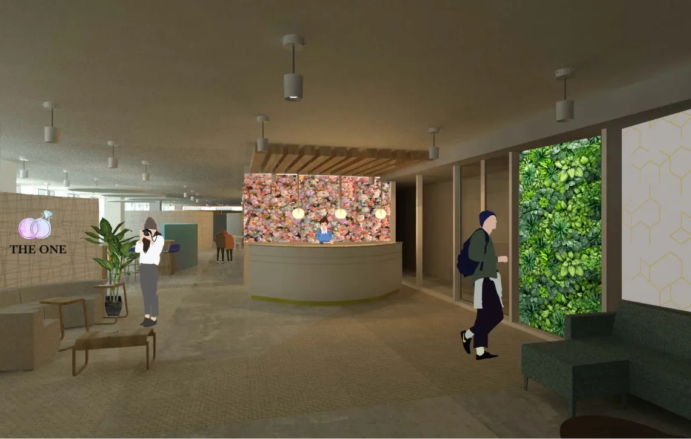

OFFICE DESIGN

Design Concept
The One is a luxury wedding planning company with a romantic atmosphere. The spac eemulates the atmosphere clients want in their wedding by natural elements with flowers,greenery, and country style with enchanting serenity. The One focuses on sustainability andproviding creative and unique moments for the perfect wedding. They have a team-basedwork culture that emphasizes employee participation on all levels and encourages opencommunication, passion, and innovation. Their goal is to ease clients and make the process assmooth as possible.
Perspectives

Relaxing Area

Greeting Area


Reception
In the between space